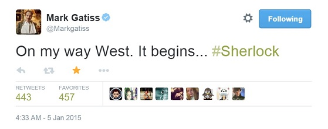
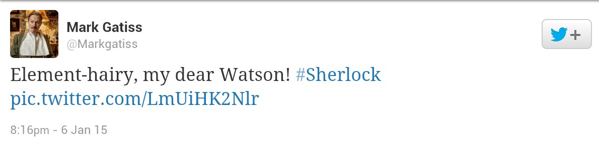
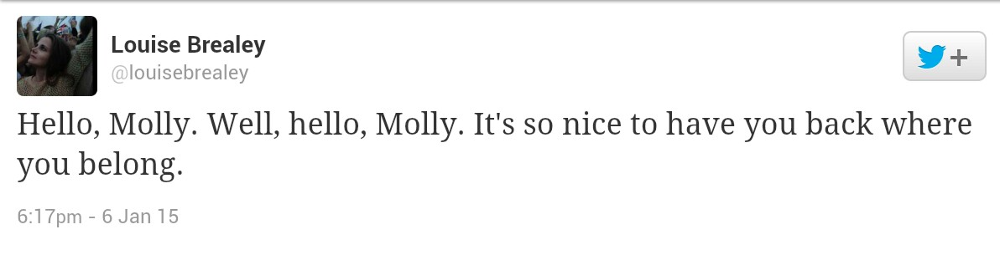
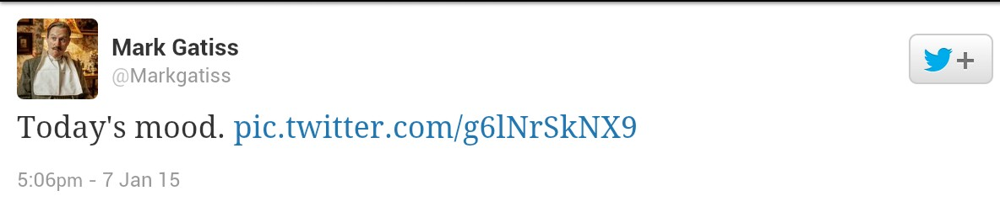

استیون
موفات در مصاحبه ای که دیروز در سایت EW منتشر شد در مورد فصل چهارم سریال شرلوک صحبح. نکته های جالب این مصاحبه رو در ادامه ی مطلب بخونید:


|
استیون
موفات در مصاحبه ای که دیروز در سایت EW منتشر شد در مورد فصل چهارم سریال شرلوک صحبح. نکته های جالب این مصاحبه رو در ادامه ی مطلب بخونید:
 منبع ترجمه از مهرناز
 از دیگر امکانات جالب این گردهمایی می شه به غرفه ی "واتسون: زندگی قبل از شرلوک،" مراسم پرسش و پاسخ با بازیگران و نویسنده ها، مهمانی هایی با تم شرلوکی (کمد لباس آیرین آدلر، مخفی گاه موریارتی، کاخ ذهن شرلوک و زیرزمین/مترو)، دکور صحنه ی 221 بی خیابان بیکر، فرصت گرفتن عکس و امضا از بازیگران و دست اندرکارهای سریال و غیره اشاره کرد. فروش بلیط های این گردهمایی در رده بندی های مختلف قیمت قرار دارند از چند هفته پیش شروع شد. حتما خبرها و عکس های مربوط به این گردهمایی رو پوشش خواهیم داد. 
فیلمبرداری قسمت
ویژه ی فصل چهارم Sherlock ، پس از یک ماه بالاخره به اتمام رسید . این
قسمت که تایید شده در حال و هوای لندن دوران ویکتوریایی اتفاق می افتد ،
برعکس قسمت های پیشین سریال ، در بریستول و اطراف آن فیلمبرداری شد . حال
این قسمت مراحل فنی بعد از فیلمبرداری را پشت سر می گذارد . جزییات اندکی
به بیرون درز پیدا کرده و تاریخ پخش قسمت هم هنوز به طور قطعی
مشخص نیست با این حال انتظار می رود که در پایان سال 2015 و در کریسمس پخش
گردد . فیلمبرداری فصل چهارم بعد از مدتی شروع خواهد شد
.
سازندگان سریال تصویر زیر را توییت کرده اند :  " یکی دیگه هم تموم شد "
!
 "برمی گردیم به خیابان بیکر! #شرلوک" منبع: توییتر مارک گیتیس #ست-لاک: این طور که از نوشته ی مارک گیتیس برمیاد تیم شرلوک برای فیلم برداری نمای 221 بی خیابان بیکر چند روزی در لندن خواهند بود. همون طور که می دونید نمای این آدرس تاریخی در خیابان North Gower که نزدیک خیابان بیکر هست فیلم برداری می شه. همین طور فردا مراسم بفتا در لندن برگزار خواهد شد که بندیکت کامبربچ نامزد دریافت جایزه ی بهترین بازیگر مرد در نقش اصلی شده است. هم بندیکت و هم مارتین (که تا قبل از مراسم درگیر فیلم برداری شرلوک هستند) قراره در این مراسم حضور داشته باشند. حتما پس از پایان مراسم خلاصه ای از رویدادهای مهم رو در سایت قرار خواهیم داد.
(کیفیت 360) دانلود از مدیافایر: 20 مگابایت 00:07:34 در حالی که مارک گیتیس و دوستان مشغول ضبط قسمت ویژه هستند ما مجبوریم که سر خودمون رو گرم کنیم. تو این ویدیو (که توسط Serenita و تعداد دیگری از بازدیدکننده ها پیشنهاد شده بود) ده پیش بینی برای فصل چهارم شرلوک رو می تونید ببینید. این ویدیو قبل از اعلام خبر قسمت ویژه ضبط شده اما نظراتش جالبند. ترجمه ی خلاصه ای از 10 پیش بینی رو می تونید در ادامه ی مطلب بخونید.
*این پست حاوی عکس هایی هست که ممکن است داستان قسمت ویژه ی شرلوک رو لو بدهد*
 عکس های فیلم برداری دیروز قسمت ویژه ی سریال شرلوک در ادامه ی مطلب
"A friend of mine. Well, I say "friend" #sherlock "یکی از دوستانمه. البته، من می گم "دوست"" #شرلوک منبع: توییتر مارک گیتیس
"این به حتم شبیِ که باید تو خونه شرلوک هلمز خوند نه این که فیلم برداریش کرد! #شرلوک" منبع: توییتر مارک گیتیس "بهترین وجه فیلم برداری های نوبت شب اینه که برای "صبحونه" سیب زمینی سرخ کرده داریم #گزارشگری_از_خط_مقدم_تلویزیون" منبع: توییتر لویز بریلی "شب سرد و جانسوزی بود پس ما کت هایمان را پوشیدیم و دستمال گردن دور گردن پیچیدیم." ملاحظه شود توسط کاگردان محشر." منبع: توییتر مارک گیتیس این عکس از فیلم برداری قسمت ویژه ی شرلوک گرفته شده. اون جمله هم از داستان کوتاه The Adventure of the Blue Carbuncle نوشته آرتور کانن دویل نقل شده.
 "در راه غرب هستم. آغاز می شود...#شرلوک" منبع: توییتر مارک گیتیس  " پیش مو افتاده، واتسون عزیزم " توییتر مارک گیتیس  " سلام مالی. چه خوبه که برگشتی به جایی که بهش تعلق داری " توییتر لوییس بریلی  مود امروز { عکس یک سر بریده شده هست. برای دیدنش می تونید به ادامه مطلب مراجعه کنید!}
|
 since 2011 (عضو باشگاه نویسندگان میهن بلاگ) Bakerstreet.ir مدیر وب سایت : Sherlock 221 |
 |
تمام حقوق این وب سایت و مطالب آن متعلق به شرلوک هلمز ساکن ۲۲۱ بی خیابان بیکر می باشد
.
كد نویسی و گرافیك قالب توسط : تم دیزاینر |